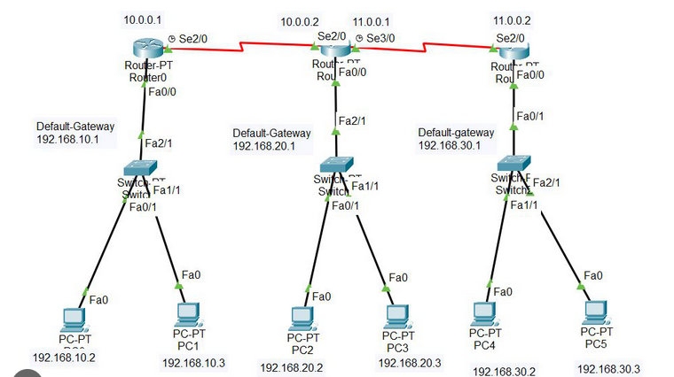

Final Networking Project
This project focused on designing and configuring a functional computer network using Cisco Packet Tracer. The network included routers, switches, and multiple PCs connected across different subnets.

Project Overview
This networking project involved designing and configuring a multi-network topology in Cisco Packet Tracer. The main objective was to establish communication between devices on different subnets by configuring routers, switches, IPv4 addressing, subnet masks, default gateways, and RIP routing. Connectivity issues were identified and resolved through troubleshooting and ping testing to ensure all devices could successfully communicate across the network.
Technology Used
- Cisco Packet Tracer
- IPv4
- Subnetting
- Rip routing
- Switch configurations
- router configurations
- Ping and connectivity testing
- Network troubleshooting